股市的游戏
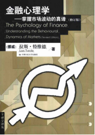 十多年前，在看过一本书（书名是 《金融心理学》）后，就在想一个问题，既然股市的价格波动是由股市参与者（投资者）的行为共同作用下形成的，那我们是不是能够用计算机通过模拟这 些参与者的行为来实现股市的模拟呢。在这之后这个想法一直没有遗忘，时不时会在脑子里出现，但具体该如何做却一直没有成型，还有就是感觉工作量过 于太大，代码开发有些复杂，直到最近……，大模型的出现使一个能变成一个团 队，让我能够快速将想法变成代码，从而将项目变成现实。下面我们就开始我们的游戏——构建我们的模型：
一、 市场参与者和市场交易
市场参与者可以根据多种维度进行分 类，比如可以按投资周期来分，可以分为短线、中线、长线投资者。可以按资金规模分成散户（个人投资者）、大户（高净值个人）、机构投资者。我们也 可以按投资风格进行分类，如价值型投资者、成长型投资者、趋势型投资者、逆向投资者等。按交易策略分有技术分析派、基本面分析派、量化交易者等 等。林林总总，不一而足。
为了方便模拟，这里从用户行为角度 出发，我们先将市场中的投资者简化为四类：价值投资者、趋势投资者、追涨杀跌者、随机投资者。这四类投资者在实际市场中切实存在，而且很重要的一 点是我们可以用代码准确的描述出他们的行为。当然仅仅这四类投资者并不能代表真实股市的全部投资者。随着我们后面模拟的逐步深入，我们可以在模拟 中引入更多的具有一定行为特征的投资者，从而观察他们自身资产的变化和对市场的影响。
下面来分别设定一下四种投资者的投 资行为：
1、 理性的价值投资者：他们仅仅基于自 身对股票内在价值的估计进行交易。他们具有以下的行为特征：
1) 当市场价格高于估值时卖出，当市场 价格低于估值时买入
2) 交易量与价格偏离程度（百分比）成 正比；
3) 我们假设股票会有一个真实价值，这 个真实价值会时不时以方波的形式发生随机变化，从而模拟某个事件对个股价值的影响（比如现实市场中有利好或利空信息）。
4) 假设每个价值投资者总能对企业有个 比较正确的判断，估值会围绕股票真实价值进行正态分布（标准差可以设为真实价值的一个比例，如10%），并且所有价值投资者估值的平均 值等于真实价值。
2、 趋势投资者：趋势投资者也是普遍存 在的一个群体。我们设定他们有以下的行为特征：
1) 为简化起见，我们使用移动平均线（MA）作为交易信号，当价格上穿MA时满仓买入，下穿MA时全仓卖出；
2) 每个趋势投资者MA周期从[5, 10, 15, 20, 25, 30, 60, 120]中随机选择，不同投资者使用不同的 观察周期；
3、 随机交易者：广大散户很大部分可能 就是这样一种群体，他们没有或没有一定的交易策略或交易原则，他们可能会跟着直觉买入或者卖出，他们遇到同样的情况有时候这样做、有时候那样做。 但他们活跃和繁荣了市场。
4、 追涨杀跌者：追涨杀跌也是在股市中 常听到的名词，这些投资者股票涨得越快或者涨得越高越兴奋，越有买入的冲动；而股票下跌时，跌的越快或跌的越低他们约恐惧，迅速卖出股票。在这里 我们这样设定：追涨杀跌者观察一定周期内（比如3天、5天……）的股票涨跌速度，买入卖出的比例 和涨跌速度成正比。
接下来，我们参照现实股市的实际情 况来确定下市场交易的规则。为了简化起见，每日的交易我们忽略日内交易，所以采用集合竞价机制如下（股市每天收盘也是集合竞价结束）：
1、 收集所有投资者的买卖订单；
2、 对订单按价格排序；
3、 寻找能产生最大成交量的价格作为出 清价；
4、 按价格优先原则执行交易。
到这里，我们就已经完成了市场规则 和四种市场参与者设定，将这些设定转换为代码（程序见：main_ca_3.0.4.py）。设定不同的参数运行之后，我们 可以得到如图1和图2的输出。为观察市场运行情况，我们 添加了5张子图：子图1是股价随交易日的变化图以及下部有 交易量反映；子图2是不同参与者平均持仓数量的变化情 况；子图3不同参与者平均持有现金的变化情 况；子图4不同参与者平均资产的变化情况；子 图5表示不同MA周期的趋势投资者的资产随时间的变 化。
通过不同的参数设定，我们可以看到 不同的运行结果。通过反复的模拟，我们初步可以观察到这样一些现象：
1、 从开始测试开始，中短期内股价基本 会围绕股票的真实价值上下波动（与教课书上所述相仿）；但当模拟时间延长，有时会发生股价和真实价值脱离的情况（我们在后面会有展示和分析）。用 价值投资之父格雷厄姆的话来说就是：“从短期看，股市是一台投票机；但是 从长远看，它是一台称重机。”
2、 股票真实价值突然发生变化，股价也 会追随股票价值发生相应变化；
3、 股价波动显示明显的周期振荡，观察 到的波动周期大约为 25-30天；
4、 相比其他投资者，价值投资者的收益 会更好一些，也更加稳健；
5、 追涨杀跌者资产会随着时间慢慢流 失；
6、 趋势投资者和随机投资者资产变化情 况相接近；
7、 趋势投资者无论用哪个采用那个周期 操作，资产变化情况相差不大；
大家有兴趣可以下载运行项目程序（main_ca_3.0.4.py）进行运行观察。
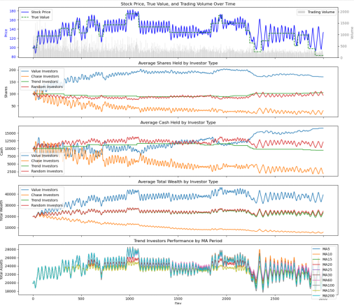
图1
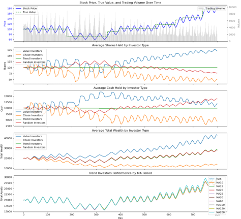
图2
二、 市场参与者的市场影响
在上一章节中，我们走出了第一步， 构建了一个由四种投资者参与的股市模型，并实现了模拟交易，在输出结果中，我们可以看到模拟出股市的波动。在这一章节，我们将讨论一下四种参与者 在股市中起到的作用。为此我更新了程序（main_ca_3.0.5.py），这个版本中每种投资者可以设置 不同的人数、不同的初始持股和资金状态。
我们首先来看一下市场中四种投资者 全部存在的情况，每种投资者数量都设为100，初始持股100股，初始资金10000元。测试周期1000天。市场价值随机数种子设为2100。
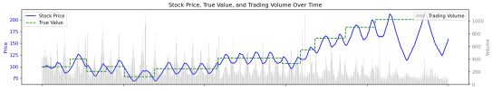
图3
第二种情况，缺少价值投资者的情况 （将价值投资者人数设为0）。小尖顶大圆底，是不是在2007年的2015年的A股疯牛出现过？
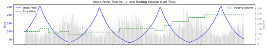
图4
第三种情况，缺少追涨杀跌者的情况 （将追涨杀跌者人数设为0）。
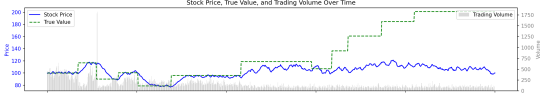
图5
第四种，缺少趋势投资者的情况（将 趋势投资者人数设为0）。
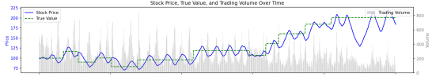
图6
第五种，缺少随机交易者的情况（将 随机交易者人数设为0）。
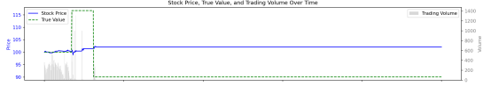
图7 （注：市场价值随机数种子设为2100）
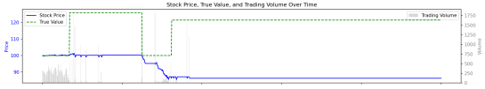
图8 （注：市场价值随机数种子设为3100）
哈哈，看图7和图8似乎没有散户（随机投资者）的市场 是玩不下去的，是没有活力的市场。测试了没有随机投资者其他组合，情况也是如此。是不是可以的得出一个结论，散户是维持股市正常运行的必要保证。
第五种，只有价值投资者和随机交易 者的情况（将其他两种投资者人数设为0）。
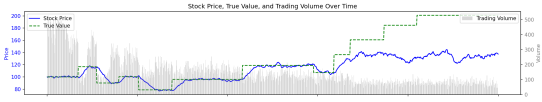
图9
第六种，只有追涨杀跌者和随机交易 者的情况（将其他两种投资者人数设为0）。又是小尖顶大圆底。
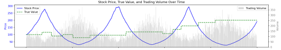
图10
第七种，只有趋势投资者和随机交易 者的情况（将其他两种投资者人数设为0）。
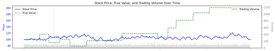
图11
通过上述模拟观察，我们又获得了一 些初步结论：
1、 价值投资者是股市的基石，起到稳定 锚点的作用；
2、 追涨杀跌者将会放大市场波动，由于 他们的存在，股市可能将会向着极端方向发展，他们是贪婪与恐惧的代名词；
3、 趋势投资者对市场的影响相对较弱；
4、 随机交易者是市场的必要组成，将维 持股市的正常健康发展。
三、 更多种类的市场参与者
在main_ca_3.0.7.py中，我们加入了“永不止损投资者”，这是一个在实际市场中普遍存在的群体，他们厌恶损失。他们可能随时会买入股票，当股票上涨时，他们获得 盈利后，会卖出。但当有浮亏时，他们不会卖出，而是死扛，直至股票返回到买入价，在死扛过程中，他们经常说的一句话是：“只要股票涨回来，我就马 上卖出，再也不买股票了”。在程序中，我们这样设定：
1、 买入策略：
- 在未持仓状态下，每次有一定的概率 （默认5%）进行全仓买入
- 买入时会以略高于当前价格（1.01倍）的价格下单，以提高成交概率
2、 持仓管理：一旦买入后，如果股价低 于买入价格（即浮亏状态），会一直持有不会止损。，完全依靠持股等待来应对亏损。
3、 卖出策略：
- 只有在股价回升到买入价格以上时才 会考虑卖出
- 当股价处于盈利区间（5%-50%）时，有一定的概率（默认50%）进行卖出
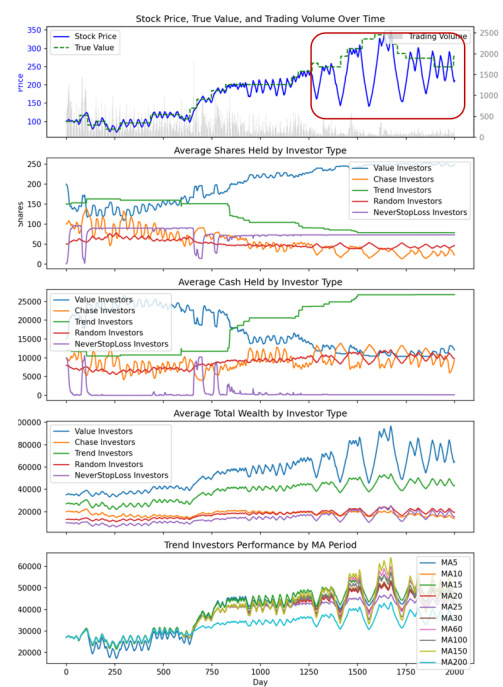
图12
图12是加入“永不止损投资者”的市场模拟的运行情况（注意：上图模拟中的各种投资者的人数、资金的初始设置有所不同）。在这张图中我们 可以观察到一些现象：
1、 在一般情况下，股票价格围绕股票的 真实价值做上下波动；真实价值变化后，股价会追随真实价值产生变化，
2、 某些情况下（红色方框内）价格产生 了更大幅度波动的现象。猜想这种现象的发生应该与市场主导力量有关：从原先的价值投资者主导，变化成由追涨杀跌者主导。据模拟观察，价值投资者资 金耗尽或者股票清仓后，市场环境未满足价值投资者的交易条件，他们无法参与市场交易，这时市场的其他力量将起到主导作用，股价的变化规律与前不 同。
3、 价值投资者和趋势交易者在这个模拟 市场中，有更多的概率跑赢其他投资者，而价值投资者收益更加明显。
在main_ca_3.0.8.py中，我们加入了市场常见另一种交易 者群体——“抄底交易者”。我们假设这类交易 者有以下操作策略：
1、 买入策略：
- 观察周期为100天，需要有足够的价格历史数据
- 从100天内的最高价计算下跌幅度
- 当下跌幅度超过一定比例（随机设定 在5%-15%之间）时开始考虑买入
- 买入量采用阶梯式增加：计算下跌了 多少个step_drop（随机设定在5%-15%之间），下跌越深，买入比例越高；
- 单次买入比例从10%起步，每下跌一个step增加10%
- 最大使用现金的80%
2、 卖出策略：
- 当持有股票且当前价格相对于平均成 本的盈利达到盈利目标（随机设定在10%-50%之间）时，采用全仓卖出策略。
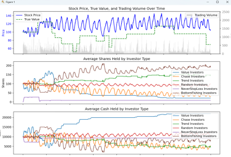
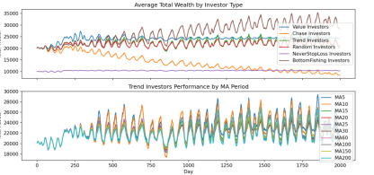
图13
运行结果如图13所示，抄底投资者似乎有着更好的收 益。下面图14，是相同参数下没有抄底交易者的模 拟运行情况。我们发现，抄底投资者的加入减弱了“股票价格围绕股票的真实价值做上下波动”这一现 象。多次模拟之后，我们似乎可以得到一个初步的结论：抄底投资者比例越大，股价和真实价值的相关性越低。
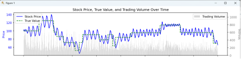
图14
以上我们引入了两种投资者，大家也 可以根据自己的设想加入更多的不同种类的投资者，模拟这些投资者对市场的影响，以及投资者自身资产的变化和波动情况。
四、 波动的形成及原因
回顾我们之前做的模拟，我们可以观 察到明显的波动性，本节将会讨论这个问题。
1、 市场参与者对波动的影响
为了简化分析，我们回到只有四种投 资者的市场（main_ca_3.0.5.py）。运行之后我们可以观察到波动 性。通过前期的模拟，我们看到这样一些现象（采用默认参数）：
- 一般情况下，我们可以观察到25-30天的波动周期（如图1和图2所示）
- 当价值投资者减少市场参与时，会产 生更大更强的市场波动（周期延长、波幅加大）。
- 极端情况下（如图4所示），在完全失去价值投资参与 时，会产生长周期巨幅波动，周期达到300天，震荡波幅高点达到2.5-3倍的初始价格，低点达到初始价格的30-50%。
2、 投资者行为参数对波动的影响：
- 价值投资者的估值差异的大小：
在正常市场条件下，95%机构的估值通常落在中间值上下15%-50%的范围内，具体取决于股票类型与市 场波动：
* 稳健型资产：±15%-25%；
* 成长型资产：±30%-50%；
* 高风险资产：±60%+。
注：以上信息通过grok查询，资料准确性有待确定。
图15显示了价值投资者估值误差标准差（estimation_error）不同的情况下对波动的影响。从上 到下分别为：0.1，0.25，0.5，周期和波动幅度有明显差异。
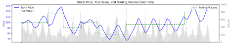
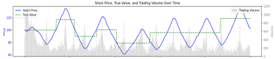
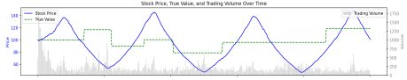
图15
- 追涨杀跌者的观察周期：
图16显示了追涨杀跌者的观察周期不同的 设置对波动的影响。从上到下分别为：3、10、20三种情况，周期有明显差异，而波动 幅度基本保持不变。
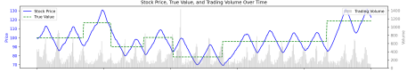
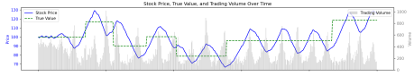
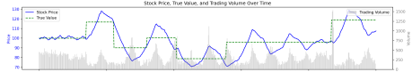
图16
3、 波动随时间的变化：
当我们把交易时间延长（到8000个交易日），如图17红色圆圈所示股价的波动规律会发生 变化：股价不再随着真实价值的变化而变化，波动的周期性变弱，波动幅度变小。其原因应该归结为：追涨杀跌者因为追涨杀跌，其资产（包括持股和现 金）会随着时间的流逝而逐步消耗，对市场价格的影响也逐步减小。这时，即便股票的真实价值大幅上升或者下跌，股价也很难追随真实价值，而变得死气 沉沉。
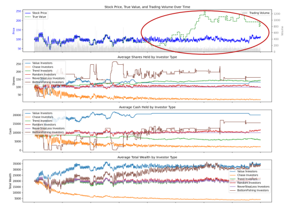
图17
至于其他影响波动频率和幅度的因 素，大家也可以利用程序进行进一步测试。
五、 市场资金
我们都知道资金在股市中起到了非常 重要的作用。我们将在这一段中探讨这个问题。main_ca_3.1.0.py添加了一个功能，就是资金注入和抽 离功能。我们可以观察当资金注入或者抽离市场后，市场的变化情况。程序支持在指定日期为投资者注入或抽离资金，可针对特定类型或全部投资者进行操 作，可按固定金额或比例进行资金调整。
下面我们来观察一下在其他条件相同 的情况下，注入不同量的资金后市场的1000个交易日的表现（价值曲线的随机数 种子设置：value_line_seed = 2076）：
情景1：不注入资金的情况
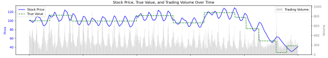
图18
情景2：第300天为所有投资者注入20%资金
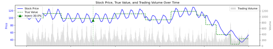
图19
情景3：第300天为所有投资者注入50%资金。注意尾部发生了较大的变化。
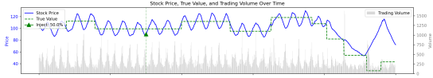
图20
情景4：第300天为所有投资者注入100%资金。
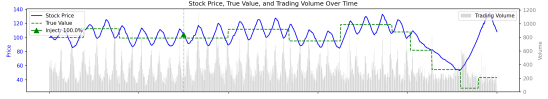
图21
情景5：第300天为所有投资者注入120%资金。
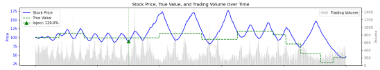
图22
情景6：第300天为所有投资者注入150%资金
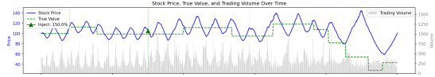
图23
情景7：第300天为所有投资者注入200%资金
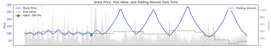
图24
情景8：第300天为所有投资者注入250%资金
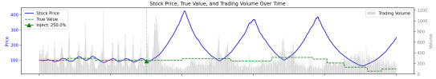
图25
情景9：第300天仅为追涨杀跌者注入230%资金
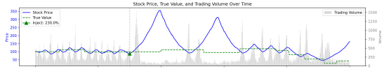
图26
下面我们再来观察一下在其他条件相 同的情况下，抽取不同量的资金后市场的1000个交易日的表现（价值曲线的随机数 种子设置：value_line_seed = 2076）：
情景1：第300天从所有交易者抽取20%资金
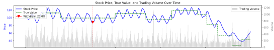
图27
情景2：第300天从所有交易者抽取50%资金
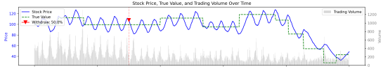
图28
情景3：第300天从所有交易者抽取50%资金
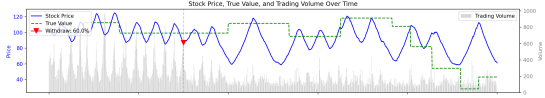
图29
情景4：第300天从所有交易者抽取65%资金
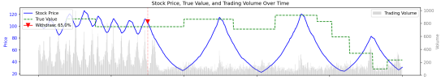
图30
经过反复测试和观察，我的猜想是：股市是否能够稳定围绕价值线附近上下波动与市场参与者之间资金面的平衡关系更密切，而不是仅仅取决于资金量的多少。
众所周知，交易中收取的佣金、印花 税等手续费对投资者来说是交易的成本，是影响市场的因素之一，影响投资者个体的长期收益，特别对高频交易者来说。但从整个市场面来看，从这个模型 来看，对股市波动的影响不大。可能是心理层面的影响大于实际影响。下面两个图分别从短期和长期进行了比较，每对图中，上图的买入成本设为0.1%，卖出成本设为0.2%；下图的买入成本设为1%，卖出成本设为2%。猜想这些交易成本对参与者都是公平的，并不会破坏资金面的平衡关系。
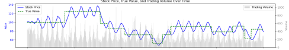
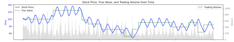
图31
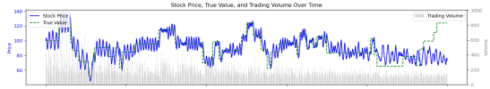
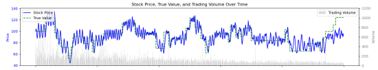
图32
六、 信息的传递与消息投资者
市场上各种各样的消息，有利好消息 和利空消息，这些消息将影响到股票的价值，使得大家会重新对股票进行估值，进而影响股票走势。有的投资者非常关注这些消息，有的一点也不关心。有 的事先通过内部渠道获得消息，有的事后从公开渠道获得，有的无从获知。当然消息有真有假，有上当受骗者，也有利用消息来控制股价。
在这个模型中，我们可以把真实价值 的变化，看成是利好和利空消息。并假设有投资者利用信息进行交易，消息投资者是利用公开信息进行交易，我们在程序中做了如下的设定：
- 信息获取时机 ：在股票真实价值变化后1-5天获知变化方向。
- 交易方向 ：价值上涨后全仓买入，价值下跌清 仓卖出。
- 持仓策略 ：买入后持有至15%浮盈、20%浮亏或30天后卖出（这些参数可调整）。
运行main_ca_3.2.1.1.py之后可以看到消息投资者的市场表现：
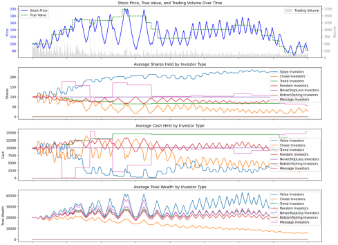
图33
七、 小结
到现在为止，我们似乎有了一套看上 去比较完善的交易模拟系统。在这个模拟系统中：
1. 我们从交易者行为特征出发，加入了 若干种投资者，包括：价值投资者、趋势投资者、追涨杀跌者、随机投资者、永不止损投资者、抄底投资者、消息投资者。
2. 在交易上，我们仅采用了一次集合竞 价的方式来模拟每天的交易，生成价格序列和交易量序列，观察市场变化情况。
3. 从模拟结果的输出上，我们可以观察 到股票价格和交易量的波动情况，以及每类投资者的资产、现金、持仓的平均变化情况。
4. 我们加入了向市场注入或抽离资金的 功能，并加入了交易手续费的情况，可以观察市场整体资金变化对交易的影响。
以上模型的建立是在本人对探索市场 运行规律的业余爱好和对经济学理论肤浅理解的基础上建立起来的，似乎能一定程度上反应市场规律，有和市场现象相拟合的，也有不那么匹配的。似乎能 总结出一些规律，但又有点似是而非。鉴于本人的学术能力有限、认知有限，模型也过于简化，有太多基于日常经验的假设，因此该模型只能看作一个有趣 的试验游戏。另外，本人的程序开发能力也比较有限，或许一句代码的瑕疵就可能推翻全部的结论。本模型在各种条件下的运行测试数量也不够，没有足够 多的数据进行归纳总结，文中所涉及的某些结论只能称之为猜想，可能并不足以全方位解释和理解市场。所以，我将各个进化的代码版本开源于此，供志同 道合者一起把玩雕琢改进。
毅Á
完稿于2025年5月1日